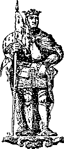
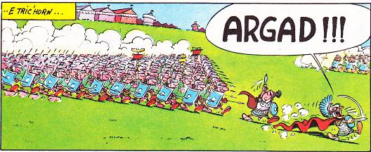

Drouk-kinnig Neumenoiou
Ton|
I
1. An aour-yeotenn zo bet falc'het. Brumenniñ raktal en-deus graet. - Argad!- Brumenniñ raktal en-deus graet. 2. - Brumenniñ 'ra, a lavare, An ozhac'h-meur euz lein 'n Arez. - Argad!- An ozhac'h-meur eus lein 'n Arez. 3. Brumenniñ, teir zun zo, teñval; Ken teñval war-zuioù Bro-C'hall, 4. Kén n'hellan gwelout e nep kiz Va mab o toned war e giz! 5. Marc'hadour mat o vale bro Ha glevjout-te [Klevas-te] roud va mab Karo? 6. - Bout-awalc'h, Tad-kozh an Arez. Daoust penaos eo, ha pe zoare? 7. - Den a skiant, den a galon Aet gant ar c'hirri da Roazhon. 8. Aet da Roazhon gant ar c'hirri Kezeg-tenn [tennerien] outo tri-ha-tri, 9. Drouk-kinnig Breizh ganto, hep si Hag eñ rannet 'tre pep hini 10. - Mar d-eo ho mab ar c'hinniger Eñ c'hortoz a reot en-aner : 11. Pa'z ejot [pa aet] da bouezañ 'n arc'hant Fallout a eure tri war gant. 12. Ken e "Da benn, gwaz, a ray an arfer! " 13. Ha peg' en e gleñv en-deus graet Ha penn ho mab en-deus troc'het. 14. Hag en e vlev en-deus kroget Hag er skudell 'n-deus eñ taolet" 15. An ozhac'h kozh 'dal m'e klevas, Voe tost [Tost a oa] deañ, ken na zemplas,.. 16. War ar garreg e Kuzhet e zremm gant e vlev gwenn. |
 17. E benn 'n e zorn, o leñvañ maour : "Karo, va mab, va mabig paour!" II 18. An ozhac'h-meur o vont en hent Gantañ war e lerc'h e gerent 19. An ozhac'h-meur o vont e-biou E-biou da zi-kreñv [ker-veur] Neumenoioù. 20. "Leverit-hu din, penn-porzhier [treizher , Hag-eñ 'ma an Aotrou er gêr? 21. - Pe 'ma-eñ, pe eñ n'ema ket, Doue r'eñ dalc'ho e yec'hed !" |
22. N'oa ket peurlavaret e c'her
P'oa degouet an aotrou er gêr 23. Degouet er ger eus-a hersal E chas bras 'raozhañ [araok] o vragal 24. 'N e zorn e wareg gantañ Hag ur pemoc'h gouez war e skoaz, 25. Hag fresk-bev ar gwad o redek War e zorn gwenn, dimeus e veg. 26. - Mat deoc'h! Mat deoc'h! Meneziz da! Ha deoc'h, ozhac'h-meur, da gentañ! 27. Petra zo c'hoarvet a nevez? Petra ganeoc'h [genoc'h] diganin-me? 28. - Deut omp da c'hout hag-eñ 'z eus reizh, Doue en neñv, ha tiern e Breizh? 29. - Doue 'z eus en neñv, a gredan, Ha tiern e Breizh, ma her c'hellan. [gellan] 30. - An nep a venn, hennezh a c'hall! An nep a c'hall a argas [gas] ar Gall, 31. A argas [gas] ar Gall ha harp e vro, Hag eviti taer e [ha] taerao! 32. Kerkoulz evit bev ha marv, Evidon ha va mab Karo, 33. Va mabig Karo dibennet Gant ar Gall eskumunuget, 34. Dibennet flour: penn, mellenn, mel Da beurgompezañ ar skudell!" 35. Hag eñ da ouelañ, ken a veras [yeas] E zaeroù betek e varv glas. 36. Ken a lugernent evel glizh War vleuñ lili, pa strink an deiz. |
37. An aotrou, p'en-deus her gwelet
Touiñ ruz-spontus en deus graet 38. - Me hen tou war benn ar gouez-mañ, Ar saezh a flemmas anezhañ 39. Kent ma walc'hin gwad va dorn dehou Em-bo gwalc'het gouli ar vro! - III 40. An Neumenoiou en-deus graet Pezh na reas biskoazh 41. Mont gant seier war an aochoù Evit dastumiñ meinigoù, 42. Meinigoù da gas da ginnig Da verer ar Roue Moalig. 43. An Neumenoioù en-deus graet Pezh na reas bis tiern ebet : 44. Houarnañ e varc'h gant arc'hant fin, Hag o houarnañ war an tu gin [gin-oc'h-gin] 45. An Neumenoioù en-deus graet Pezh na ray biken tiern ebet: 46. Monet da baeañ ar c'hinnig Evitañ da vout pendevig. 47. "Digorit frank perzhier Roazhon Ma 'z in tre e kêr [er ger] war-eeun! 48. An Neumenoioù zo amañ, Kirri leun a arc'hant gantañ!" 49. "Diskennit, Aotrou, deuit en ti, Lezit [list] ho kirri er c'harrdi 50. Lezit [list] ho marc'h gwenn gant ar flec'h Ha deuit-hu da goaniañ d'an nec'h! 51. Deuit da goaniañ, d'en em [kent da] walc'hiñ. Kornañ ' reer an dour; klevit-c'hwi?" 52. "N em walc'hiñ [Gwalc'hiñ] rin bremaik, Pa vezo pouezet ar c'hinnig" |
53. Kentañ sac'h a voe degaset
Hag eñ er c'hiz mat liammet. 54. Kentañ sac'h a voe digaset Ar pouez ennañ a oe kavet. 55. An eil [eilvet] sac'h a oe degaset Kompez ivez a oe kavet. 56. 'N trede sac'h oe pouezet : "Hola ! Hola! hola! Mankout [fallout] a ra!" 57. Ar merer kerkent [evel] m'her gwelas E zorn war ar sac'h 'astennas; 58. El liammoù a grogas krenn O klask an tu d'o di-aereiñ 59. - Gortoz, gortoz, Aotrou merer, Va c'hleze o zroc'ho e-verr! [ho droc'ho e-berr] " 60. 'N oa ket e gomz peurlavaret Pa oa e gleze dic'houinet [diwennet] , 61. Ha gant penn ar Gall daoubleget 'Rez e zivskoaz skoiñ en-deus graet. 62. Ken' droc'has kig hag elfeien Ha sug ur skudell c'hoazh ouzhpen. 63. Ha kouezhet er skudell ar penn Hag hi kompez mat evel-henn! 64. Hogen, sellit-hu, trouz e kêr [er ger] : - Harz al lazher! Harz al lazher! 65. 'Ma kuit ! 'Ma kuit ! Kasit [keset gouloù! Deomp timat da heul e roudoù! - 66. - Kasit [keset gouloù! Mat a refet, Du an noz hag an hent skornet! 67. Nemet ma uzfec'h ho potoù 'M eus aon o tont war va roudoù, 68. Ho potoù-lèr glas alaouret... Ho skudilli na uzfot ket, 69. Ho skudilli aour gwech ebet O pouezañ mein ar Vretoned! - |


|
Dans son "La Villemarqué", Francis Gourvil critique la "langue du Barzaz-Breiz" (pp. 366 à 388) sous plusieurs aspects:
- Les chants et leurs dialectes; - La syntaxe et ses singularités; - Les gallicismes; - Les barbarismes et les mots inconnus; - Les traductions arbitraires. Parmi celles-ci figure le mot "argad!" du refrain, dans lequel nous dit Gourvil, "La Villemarqué a vu un composé du gallois "cad"=combat et qui signifie en réalité "huée, cri pour effrayer les loups". C'est pourtant le mot qu'a choisi le traducteur des Editions Preder pour rendre le "A l'attaque!" du texte de Goscinny. Le dictionnaire des "Mouladurioù hor yezh" traduit également "argad" par "attaque". Certaines de ces critiques sont justifiées. Sur la base du texte établi dans le "Brasier des ancêtres" par Loeiz Ar Floc'h (collection "10-18", 1977), certaines expressions du Barzhaz ont été mises en italiques entre crochets et remplacées par des équivalents plus usuels. |
In his "La Villemarqué", Francis Gourvil makes a very critical appraisal of the "Language of the Barzaz-Breiz" (pp. 366 to 388) and examines successively:
- the songs and their dialects; - the syntax and its weird aspects; - the gallicisms; - the barbarisms and unknown words; - the arbitrary translations. Among these faulty translations he quotes the word "argad!" in the burden, which he mistook, so says Gourvil, for a compound based on the Welsh "cad", meaning "combat", whereas the real meaning of the Breton word is "cry to scare wolves". However, "argad" is the word chosen by the translater appointed by Editions Preder to transcribe an Asterix album. Besides the modern dictionary of the "Mouladurioù hor yezh" also translates "argad" as "attack". Some of these criticisms are justified. Based on the text established by Loeiz Ar Floc'h in "Our ancestors' bonfire"("10-18" collection, 1977), some expressions of the Barzhaz are printed in italics, in square brackets, and replaced by more usual equivalents. |
Kempennet gant Laura W. Taylor (1865)